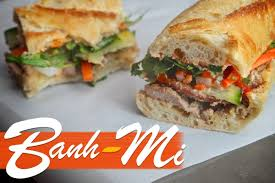

Banh Mi Bistro

About Us!
At Banh Mi Bistro, we aim to offer the best Vietnamese sandwiches in the Twin Cities. Every baguette is handmade
and baked in our oven, and every ingredients we use is made from scratch in our kitchen. You'll know what you'll be getting in every bite! Out menus may be limited, but it allows us to accomplish a high level of quality.